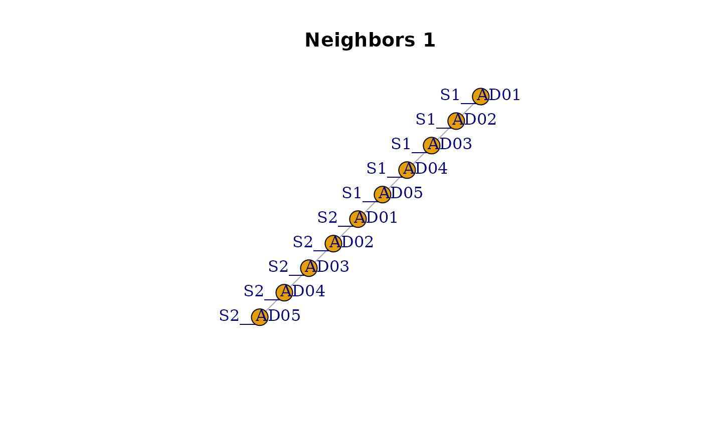
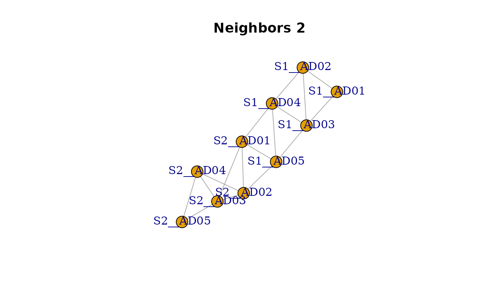
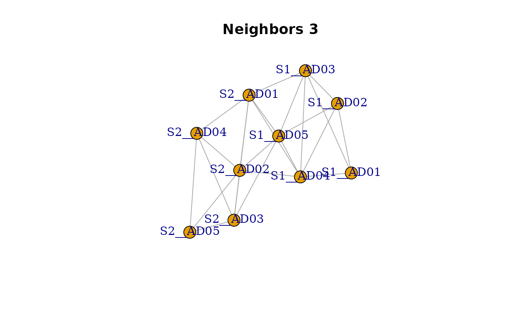
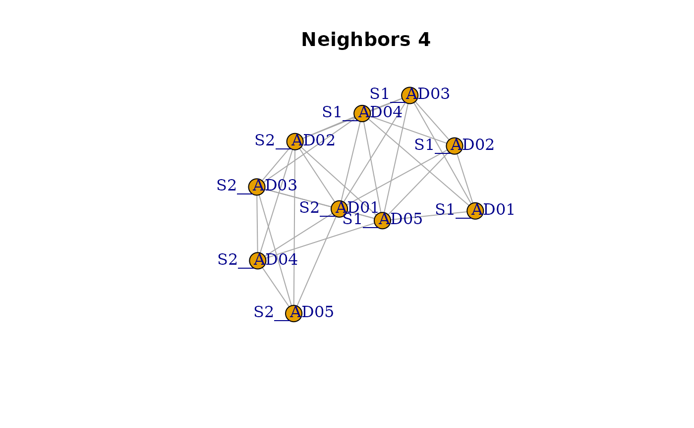
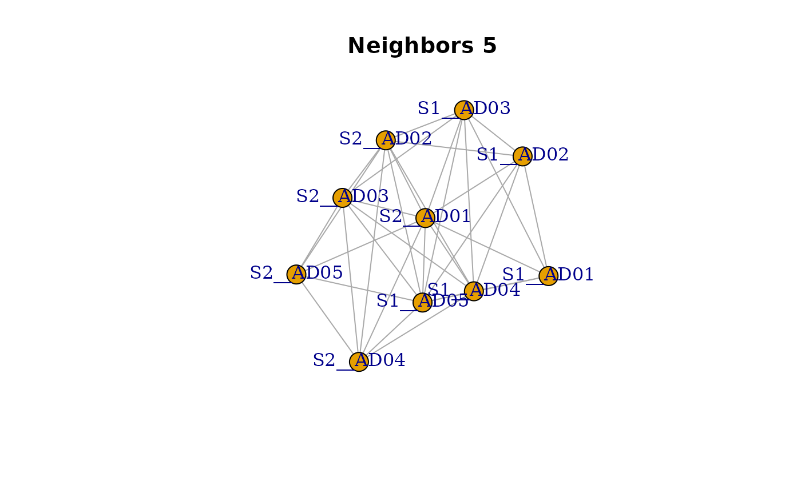

## Create fake dataset with two sites and 5 quadrats in each ----
quadrat_per_site <- 5
tab <- data.frame("site" = c(rep("S1", quadrat_per_site),
rep("S2", quadrat_per_site)),
"quadrat" = rep(paste0("AD0", 1:quadrat_per_site), 2))| site | quadrat |
|---|---|
| S1 | AD01 |
| S1 | AD02 |
| S1 | AD03 |
| S1 | AD04 |
| S1 | AD05 |
| S2 | AD01 |
| S2 | AD02 |
| S2 | AD03 |
| S2 | AD04 |
| S2 | AD05 |
## Create a unique key (site and quadrat combination) ----
tab <- recode_units(tab)| site | quadrat | key |
|---|---|---|
| S1 | AD01 | S1__AD01 |
| S1 | AD02 | S1__AD02 |
| S1 | AD03 | S1__AD03 |
| S1 | AD04 | S1__AD04 |
| S1 | AD05 | S1__AD05 |
| S2 | AD01 | S2__AD01 |
| S2 | AD02 | S2__AD02 |
| S2 | AD03 | S2__AD03 |
## Number of neighbors to consider (both in upstream and downstream directions) ----
level <- 1
## Identify links between edges (unique key) ----
dat <- make_links(tab$"key", level = level)| from | to | weight | |
|---|---|---|---|
| 1 | S1__AD01 | S1__AD01 | 1 |
| 2 | S1__AD01 | S1__AD02 | 1 |
| 3 | S1__AD01 | S1__AD03 | 0 |
| 5 | S1__AD01 | S1__AD04 | 0 |
| 8 | S1__AD01 | S1__AD05 | 0 |
| 6 | S1__AD01 | S2__AD01 | 0 |
| 7 | S1__AD01 | S2__AD02 | 0 |
| 4 | S1__AD01 | S2__AD03 | 0 |
## Convert data frame to adjacency matrix ----
## (remove diagonal and upper triangle)
mat <- df_to_matrix(dat, diag = FALSE, upper = FALSE)#> S1__AD01 S1__AD02 S1__AD03 S1__AD04 S1__AD05 S2__AD01 S2__AD02
#> S1__AD01 NA NA NA NA NA NA NA
#> S1__AD02 1 NA NA NA NA NA NA
#> S1__AD03 0 1 NA NA NA NA NA
#> S1__AD04 0 0 1 NA NA NA NA
#> S1__AD05 0 0 0 1 NA NA NA
#> S2__AD01 0 0 0 0 1 NA NA
#> S2__AD02 0 0 0 0 0 1 NA
#> S2__AD03 0 0 0 0 0 0 1
#> S2__AD04 0 0 0 0 0 0 0
#> S2__AD05 0 0 0 0 0 0 0
#> S2__AD03 S2__AD04 S2__AD05
#> S1__AD01 NA NA NA
#> S1__AD02 NA NA NA
#> S1__AD03 NA NA NA
#> S1__AD04 NA NA NA
#> S1__AD05 NA NA NA
#> S2__AD01 NA NA NA
#> S2__AD02 NA NA NA
#> S2__AD03 NA NA NA
#> S2__AD04 1 NA NA
#> S2__AD05 0 1 NA
## Convert back adjacency matrix to data frame ----
## (tricks to remove diagonal and upper links)
dat <- matrix_to_df(mat)#> from to weight
#> 11 S1__AD02 S1__AD01 1
#> 21 S1__AD03 S1__AD01 0
#> 22 S1__AD03 S1__AD02 1
#> 31 S1__AD04 S1__AD01 0
#> 32 S1__AD04 S1__AD02 0
#> 33 S1__AD04 S1__AD03 1
#> 41 S1__AD05 S1__AD01 0
#> 42 S1__AD05 S1__AD02 0
#> 43 S1__AD05 S1__AD03 0
#> 44 S1__AD05 S1__AD04 1
#> 51 S2__AD01 S1__AD01 0
#> 52 S2__AD01 S1__AD02 0
#> 53 S2__AD01 S1__AD03 0
#> 54 S2__AD01 S1__AD04 0
#> 55 S2__AD01 S1__AD05 1
#> 61 S2__AD02 S1__AD01 0
#> 62 S2__AD02 S1__AD02 0
#> 63 S2__AD02 S1__AD03 0
#> 64 S2__AD02 S1__AD04 0
#> 65 S2__AD02 S1__AD05 0
#> 66 S2__AD02 S2__AD01 1
#> 71 S2__AD03 S1__AD01 0
#> 72 S2__AD03 S1__AD02 0
#> 73 S2__AD03 S1__AD03 0
#> 74 S2__AD03 S1__AD04 0
#> 75 S2__AD03 S1__AD05 0
#> 76 S2__AD03 S2__AD01 0
#> 77 S2__AD03 S2__AD02 1
#> 81 S2__AD04 S1__AD01 0
#> 82 S2__AD04 S1__AD02 0
#> 83 S2__AD04 S1__AD03 0
#> 84 S2__AD04 S1__AD04 0
#> 85 S2__AD04 S1__AD05 0
#> 86 S2__AD04 S2__AD01 0
#> 87 S2__AD04 S2__AD02 0
#> 88 S2__AD04 S2__AD03 1
#> 91 S2__AD05 S1__AD01 0
#> 92 S2__AD05 S1__AD02 0
#> 93 S2__AD05 S1__AD03 0
#> 94 S2__AD05 S1__AD04 0
#> 95 S2__AD05 S1__AD05 0
#> 96 S2__AD05 S2__AD01 0
#> 97 S2__AD05 S2__AD02 0
#> 98 S2__AD05 S2__AD03 0
#> 99 S2__AD05 S2__AD04 1
## Plot the network with igraph ----
net <- igraph::graph.data.frame(dat[dat$"weight" == 1, ], directed = FALSE)
plot(net, layout = igraph::layout_components(net))
title(paste("Neighbors", level))
level <- 2
dat <- make_links(tab$"key", level = level)
mat <- df_to_matrix(dat, diag = FALSE, upper = FALSE)
dat <- matrix_to_df(mat)
net <- igraph::graph.data.frame(dat[dat$"weight" == 1, ], directed = FALSE)
plot(net, layout = igraph::layout_components(net))
title(paste("Neighbors", level))
level <- 3
dat <- make_links(tab$"key", level = level)
mat <- df_to_matrix(dat, diag = FALSE, upper = FALSE)
dat <- matrix_to_df(mat)
net <- igraph::graph.data.frame(dat[dat$"weight" == 1, ], directed = FALSE)
plot(net, layout = igraph::layout_components(net))
title(paste("Neighbors", level))
level <- 4
dat <- make_links(tab$"key", level = level)
mat <- df_to_matrix(dat, diag = FALSE, upper = FALSE)
dat <- matrix_to_df(mat)
net <- igraph::graph.data.frame(dat[dat$"weight" == 1, ], directed = FALSE)
plot(net, layout = igraph::layout_components(net))
title(paste("Neighbors", level))
level <- 5
dat <- make_links(tab$"key", level = level)
mat <- df_to_matrix(dat, diag = FALSE, upper = FALSE)
dat <- matrix_to_df(mat)
net <- igraph::graph.data.frame(dat[dat$"weight" == 1, ], directed = FALSE)
plot(net, layout = igraph::layout_components(net))
title(paste("Neighbors", level))